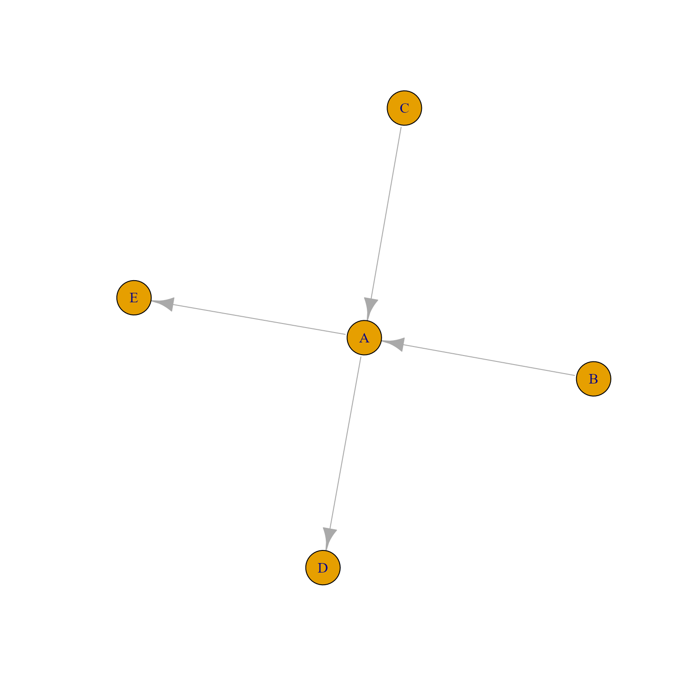

Flip direction of igraph edges
Arguments
- g
igraphobject- edge_idx
integerindex of edges in the order they are stored inigraph::E(g), or what igraph calls an "edge sequence" which is a character name for each node, defined as "node1|node2". For example "D|A" would define an edge from node name "D" to node name "A". Whenverbose=TRUEa summary table is printed out to show which edges were flipped.- verbose
logicalindicating whether to print verbose output. Whenverbose=TRUEa summary table is printed with these columns:edge_seq: the input edge sequence, for example whenedge_idxis provided as acharactervector, the input vector is printed here.edge_seq_matched: edge sequence that matched thegobject. For example, whenedge_idxinput is acharactervector, only the edges that match theginput are included here.edge_idx: the integer index values of edges flipped. AnNAvalue indicates the edge was not flipped, which should only happen when inputedge_idxis provided as acharactervector and some edges do not match theginput.
- ...
additional arguments are ignored.
Details
This function simply flips the direction of igraph edges, keeping all other node and edge attributes.
Note that this function will flip the order of nodes for each
edge defined by edge_idx, regardless whether the igraph
itself is a directed graph.
When edge_idx is provided as a character vector edge sequence,
any entries that do not match edges in g are ignored. A summary
table is printed when verbose=TRUE.
See also
Other jam igraph functions:
communities2nodegroups(),
drawEllipse(),
edge_bundle_bipartite(),
edge_bundle_nodegroups(),
fixSetLabels(),
get_bipartite_nodeset(),
highlight_edges_by_node(),
igraph2pieGraph(),
label_communities(),
mem2cnet(),
mem2emap(),
nodegroups2communities(),
rectifyPiegraph(),
removeIgraphBlanks(),
subsetCnetIgraph(),
subset_igraph_components(),
sync_igraph_communities()
Examples
am <- matrix(ncol=5, nrow=5, byrow=TRUE,
data=c(0,0,0,0,0,
1,0,0,0,0,
1,0,0,0,0,
1,0,0,0,0,
1,0,0,0,0),
dimnames=list(head(LETTERS, 5),
head(LETTERS, 5)))
am;
#> A B C D E
#> A 0 0 0 0 0
#> B 1 0 0 0 0
#> C 1 0 0 0 0
#> D 1 0 0 0 0
#> E 1 0 0 0 0
g1 <- igraph::graph_from_adjacency_matrix(am)
plot(g1);
g2 <- flip_edges(g1, 3:4);
plot(g2);
